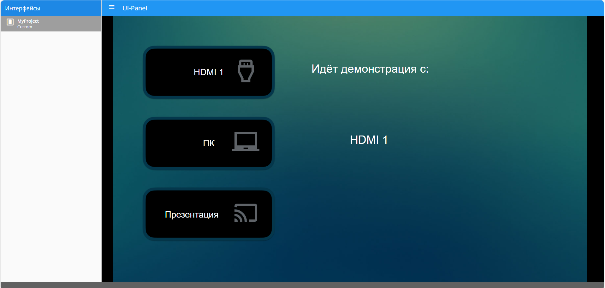
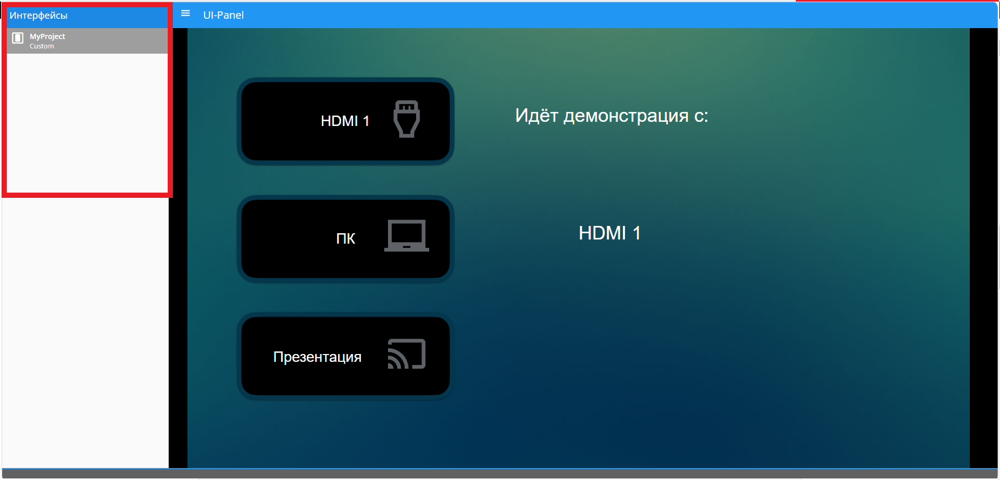

UI-Panel
Панель управления (Графический интерфейс)
Графический интерфейс доступен по адресу <IP Контроллера>:5001. По этому адресу открываются все доступные интерфейсы.

Чтобы открыть нужный интерфейс, выберите его в селекторе интерфейсов в левой части страницы. После выбора в адресной строке появится адрес выбранного интерфейса.

Чтобы открыть интерфейс в полноэкранном режиме, добавьте к адресу ключ &immersive=true.
Пример:
http://192.168.1.250:5001/?interface=4481370f-5d5b-4604-8c3b-030daa93c4ac&page=3ea383c4-7c1e-4db7-8788-352fedb9696b&immersive=true